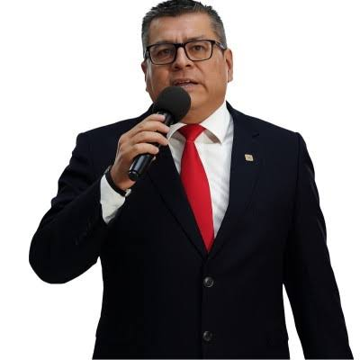

Mejor Docente del Semestre
Reconocimiento otorgado por estudiantes de la Escuela de Administración de Empresas por excelencia en la enseñanza.
Candidato a Director
Profesor de Economía · ITCR Sede San Carlos
Más de 15 años formando profesionales con visión crítica y compromiso regional. Investigador activo, líder académico y candidato a Director del Campus Tecnológico Local de San Carlos.

Trayectoria Académica
Una trayectoria marcada por la excelencia docente, la investigación aplicada y el compromiso con la comunidad universitaria.
Trayectoria de Liderazgo
2023
Municipalidad de San Carlos
Impartición de talleres de finanzas personales para pequeños empresarios de la zona.
2022
COOPELESCA R.L.
Consultoría sobre estrategias de desarrollo económico local sostenible.
2021
ITCR Sede San Carlos
Coordinación del programa de extensión comunitaria en comunidades rurales.
2019
Cámara de Comercio de San Carlos
Organización y ponencia en foro sobre perspectivas económicas de la región.
2017
MAG Costa Rica
Capacitación a productores sobre gestión empresarial y acceso a mercados.
Propuestas
Ideas y lineamientos para fortalecer las distintas áreas del Campus Tecnológico Local de San Carlos.
[Placeholder] Descripción de propuestas orientadas a mejorar la calidad académica, actualización curricular y formación continua del cuerpo docente.
[Placeholder] Lineamientos para impulsar proyectos de investigación aplicada, vinculación con el sector productivo y acceso a fondos externos.
[Placeholder] Estrategias para fortalecer la extensión universitaria, alianzas con municipios y organizaciones de la Región Huetar Norte.
[Placeholder] Propuestas de modernización administrativa, transparencia en la gestión y mejora de los procesos internos del campus.
[Placeholder] Iniciativas de sostenibilidad ambiental, bienestar estudiantil y mejora de infraestructura para la comunidad universitaria.
[Placeholder] Plan de digitalización de servicios, adopción de herramientas tecnológicas y formación en competencias digitales para docentes y estudiantes.
Testimonios
Colegas, estudiantes y miembros de la comunidad comparten sus palabras sobre el Dr. Alfredo Elías Alfaro Ramos.
"Un docente que transformó mi forma de ver la economía. Su compromiso con la región es genuino y admirable."
"Alfredo siempre ha liderado con el ejemplo. Su visión para el campus es exactamente lo que necesitamos en este momento."
"Su trabajo con las comunidades rurales ha dejado una huella real. Es el candidato indicado para dirigir el campus."
¿Deseas compartir tus palabras? Escríbenos aquí.
Contribuciones al conocimiento en economía y desarrollo regional
"Determinantes del crecimiento económico en regiones rurales de Costa Rica: evidencia econométrica"
Revista de Ciencias Económicas, 41(2), 45–68.
"Impacto de la inversión pública en el desarrollo de la Región Huetar Norte"
Economía y Sociedad, 28(1), 12–34.
"Análisis de competitividad de las PYMES agroindustriales en zonas periféricas"
Tec Empresarial, 15(3), 22–41.
"Políticas de empleo juvenil y desarrollo local: el caso de San Carlos"
Economía y Desarrollo, 19(2), 78–99.
"Modelos de desarrollo endógeno aplicados a municipios costarricenses"
Revista Costarricense de Economía, 5(1), 10–29.
Estoy disponible para consultas, colaboraciones académicas y propuestas de la comunidad universitaria del Campus San Carlos.
Dr. Alfredo Elías Alfaro Ramos
Profesor de Economía
Candidato a Director del Campus Tecnológico Local de San Carlos